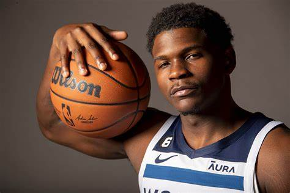

|
Anthony Edwards (nacido el 8 de agosto de 2001 en Atlanta, Georgia) es un jugador de baloncesto profesional estadounidense que juega como escolta para los Minnesota Timberwolves en la NBA. Seleccionado como la primera elección global en el draft de 2020, Edwards rápidamente se destacó por su impresionante atletismo, habilidades ofensivas y capacidad defensiva
Su estilo de juego ha sido comparado con el de Michael Jordan, destacando su capacidad para finalizar cerca del aro y su ética de trabajo incansable. En defensa, ha sido reconocido por su intensidad y habilidades para defender tanto a escoltas como a aleros largos..>
menu principal
|

 ANTONY EDWARS
ANTONY EDWARS